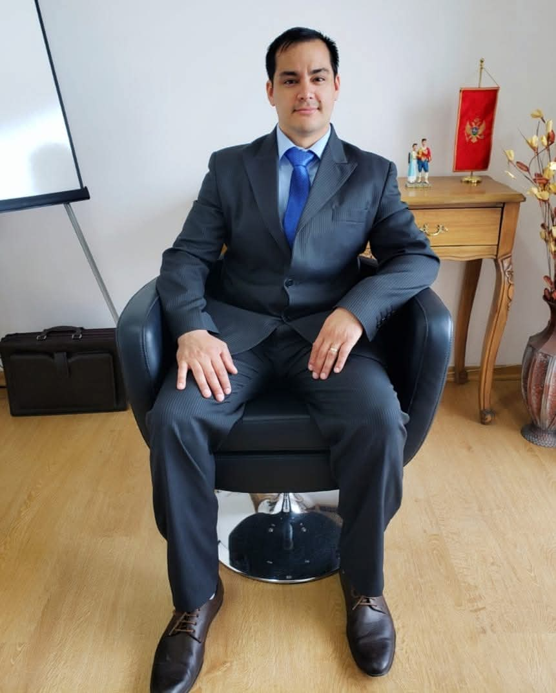

[Aquí puedes escribir tu historia y experiencia profesional. Puedes comenzar redactando dónde te formaste y los motivos por los que decidiste especializarte en derecho laboral.]
[Este espacio está especialmente diseñado para que cuentes tus valores y tu compromiso con los trabajadores de Tierra del Fuego. ¡Edita este texto cuando quieras agregando tu toque personal!]